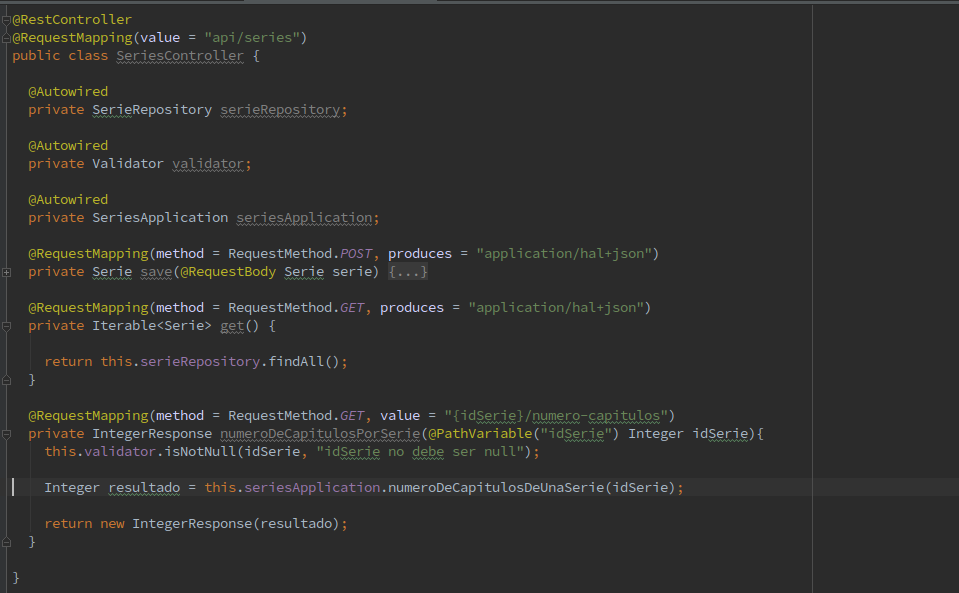

Spring Framework
Created by Team Darwin
¿Que es Spring?
El Spring Framework es una plataforma Java que proporciona un amplio soporte de infraestructura para el desarrollo de aplicaciones Java.
Caracteristicas Principales
- Inyección de dependencia
- Programación Orientada a Aspectos incluyendo la gestión de transacciones declarativa de Spring
- Spring MVC marco de aplicaciones web y servicios web REST apoyo fundamental para JDBC, JPA, JMS.
Requerimientos mínimos
- JDK 6+ para 4.x Spring Framework
- JDK 5+ para 3.x Spring Framework
Gradle es una herramienta para automatizar la construcción de nuestros proyectos, por ejemplo las tareas de compilación, testing, empaquetado y el despliegue de los mismos. Es muy flexible para la configuración, pero además ya tiene armadas las tareas para las mayoría de los proyectos por default. Esta herramienta es usado por grandes proyecto “Open Source” como “Spring”, “Hibernate”, y “Grails”. (También lo usan empresas como “LinkedIn” para sus proyectos)
@Entity

@Data
@Entity
@Table(name = "")
Repository

@RepositoryRestResource
exported = false/true
path = "nombre"
Querys
| Keyword | Sample | JPQL snippet |
|---|---|---|
| And | findByLastnameAndFirstname | … where x.lastname = ?1 and x.firstname = ?2 |
| Between | findByStartDateBetween | … where x.startDate between ?1 and ?2 |
| LessThan | findByAgeLessThan | … where x.age < ?1 |
| After | findByStartDateAfter | … where x.startDate > ?1 |
| OrderBy | findByAgeOrderByLastnameDesc | … where x.age = ?1 order by x.lastname desc |
@Query
@Query("select u from User u where u.emailAddress = ?1")
User findByEmailAddress(String emailAddress)
@RestController
Fantastic Ordered List
- One is smaller than...
- Two is smaller than...
- Three!
Tabular Tables
| Item | Value | Quantity |
|---|---|---|
| Apples | $1 | 7 |
| Lemonade | $2 | 18 |
| Bread | $3 | 2 |
Clever Quotes
These guys come in two forms, inline:
“The nice thing about standards is that there are so many to choose from”
and block:
“For years there has been a theory that millions of monkeys typing at random on millions of typewriters would reproduce the entire works of Shakespeare. The Internet has proven this theory to be untrue.”
Intergalactic Interconnections
You can link between slides internally, like this.
Speaker View
There's a speaker view. It includes a timer, preview of the upcoming slide as well as your speaker notes.
Press the S key to try it out.
Export to PDF
Presentations can be exported to PDF, here's an example:
Global State
Set data-state="something" on a slide and "something" will be added as a class to the document element when the slide is open. This lets you apply broader style changes, like switching the page background.
State Events
Additionally custom events can be triggered on a per slide basis by binding to the data-state name.
Reveal.addEventListener( 'customevent', function() {
console.log( '"customevent" has fired' );
} );
Take a Moment
Press B or . on your keyboard to pause the presentation. This is helpful when you're on stage and want to take distracting slides off the screen.
Much more
- Right-to-left support
- Extensive JavaScript API
- Auto-progression
- Parallax backgrounds
- Custom keyboard bindings